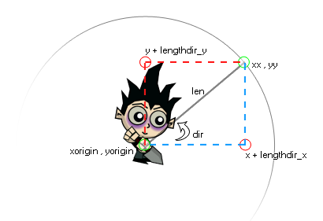

lengthdir_y(len, dir);
| 参数 | 描述 |
|---|---|
| len | 待返回的点的长度距离。 |
| dir | 待返回的点的方向 |
返回值: 实数型
这个函数起初看起来比较令人困惑，但事实并非如此。它被用于去获取一个长度为"len"个像素，方向为"dir"的向量①的竖直分量。
试想一个实例周围的一个圆，然后再想一下这个圆周上的点。为了移动到这个点我们需要在这个方向上移动这个物体这么多距离……所以这个函数（当和函数lengthdir_x共用的时候）获取在圆周上的这个点来被用于实例的代码中。详情参见下图：

①：此处为了方便理解，也是为了简化翻译，对原意上进行了一定修改，但原文的理解并不会造成影响。
instance_create(x + lengthdir_x(64, image_angle), y + lengthdir_y(64, image_angle), obj_bullet);
这将会在(x,y)处创建一个子弹实例，但是会伴随在image_angle的方向上增加64像素。这在游戏中通常用于同步子弹的起始位置和枪的末端位置
| Converted from CHM to HTML with chm2web Pro 2.85 (unicode) |